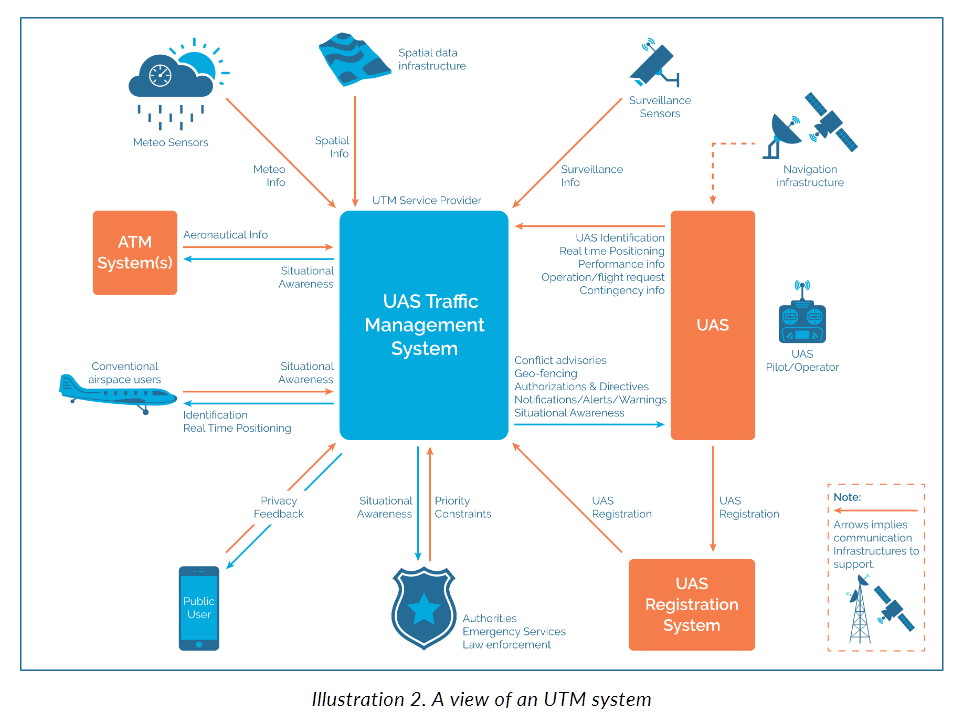
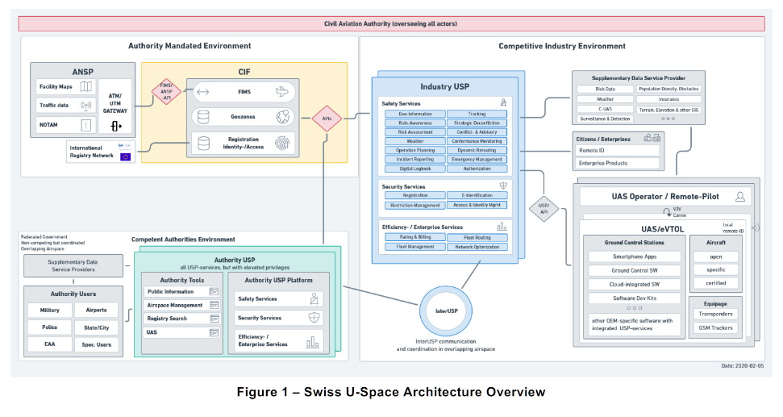
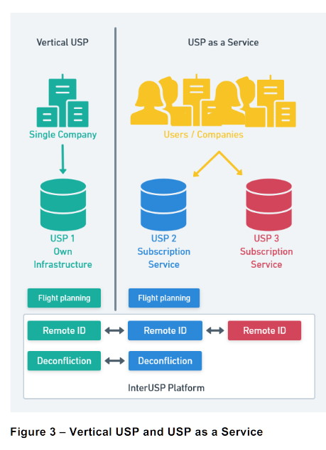
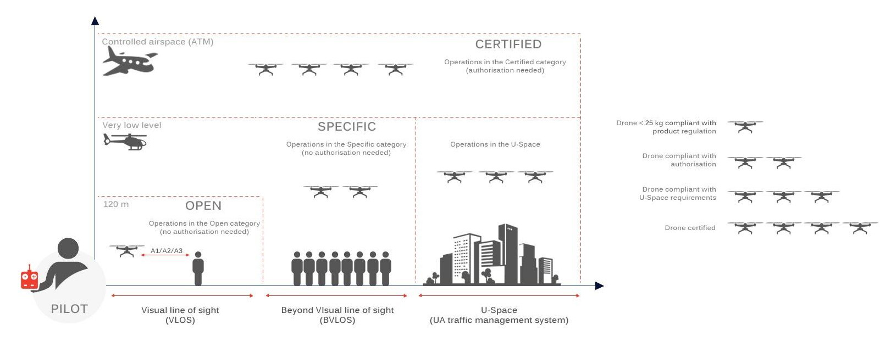

State of the art in UTM
The following contains a review of existing efforts by different agencies / stakeholders. Some of them have not been updated for a couple of years and we highlight key elements of the the related documents / concepts.
GUTMA
Given that GUTMA is mainly a industry organization and not a authority, they maintain opinions on the architectures for UTM. The main document reviewed is the UTM Architecture and the Designing UTM for Global Success documents. GUTMA recognizes UTM as a "system of systems" with many active and passive stakeholders:

Source: Page 13, Illustration 2 of UTM Architecture document.The figure above illustrates the key players in the eco-system and is useful in understanding the scope of a UTM system. In a digital context, all the interactions will happen via APIs since a number of the interactions will be done by computers with little or no human oversight unless there is an emergency.
Key Insights from GUTMA Architecture document
- The document identifies roles and use-cases (Pages 17-19, UTM Architecture) which is a good starting point for understanding how these stakeholders will interact with these services.
- The document does not specify technical architectures for UTM and is a good starting point to get a overview of the eco-system.
- Given that the authors are not in a standards making organization or authority they do not specify or recommend standards that could be adopted.
Swiss ConOps
A U-Space Concept of Operations for Switzerland was first published in 2019 and updated in 2020. This document, focuses on the specifics and layout a advanced architecture. In Switzerland Skyguide the ANSP works in co-ordination with the Civil Agencies to form the "Common Information Function" (Section 6.1)

(Source: Swiss ConOps Document, link above)Key Insights from Swiss ConOps
- The ConOps recognizes two main types of USP services: Vertically integrated and "USP as a service". Both of these talk to a common interoperability framework and exchange data.

(Source: Swiss ConOps Document, link above) - The ConOps talks about a incremental framework of approval with selected services and providers in a collaborative fashion by leveraging standards. The incremental process will start with a voluntary stage and after the publication of U-Space rules, technical tools, processes will be explored.
- The Swiss ConOps references the ASTM standard for Network Remote-ID and Tracking and the inter-operability between USSes.
European Union Aviation Safety Agency
The EU recently published a legislative framework for U-Space. The regulation details the roles and responsibilities of the different stakeholders in the U-Space / UTM eco-system. The EU through its ConOps has classified operations and airspaces and equipment guidelines for U-Space, a example image is below.

Source : Dronerules.euU-Space Specifications
- EU works as a federation and it is left to the member states to design the U-Space for drone operations.
- The new U-Space regulation calls for a creation of
U-Space Service Providers (USSP)that will be certified to provide U-Space services. - The EU has identified four mandatory services that must be provided by USSPs:
- Geo-awareness
- Traffic Information
- Flight Authorization
- Network Identification
- The exist standards for these services e.g. ED-269 for Geo-awareness, ASTM F3411-19 etc. It can be reasonable to assume that these or similar standards will be adopted to by authorities to enable standardized certification.
- Once the implementing regulation comes into force in January 2023, we can assume that there will be activity and interest in this space from the EU.
- Drone operators and ANSPs will have to establish contracts wtih a certified USSP.
ICAO
(AG)
Federal Aviation Authority
UTM Specification v1/v2
(SP)
Unmanned Aerial Mobility Specification v1
(MS)
Japan
(GT)
China
(??)
India
In November 2020, the MoCA published a National UTM Policy Discussion Draft. It describes a fairly comprehensive traffic management ecosystem and details the stakeholders, components, services provided by UTMSPs and DigitalSky at a high level. The Architecture is clearly inspired by the JARUS UTM architecture NASA-UTM-1. The section on Identification and Tracking of UAS seems to be inspired by ASTM Remote ID standard ASTM-F3411-19. For Risk Assessment of unmanned operations, the ICAO Safety Management System ICAO-Annex19 The draft also discusses eleven operational scenarios modelled on SORA standard scenarios (see JARUS-SORA, JARUS-SORA-STS01, JARUS-SORA-STS02), although not as well defined from a risk assessment point-of-view. The scenarios seem to be geared towards enabling particular business cases based on operational constraints that are too broad for actual standardisation. The section on Airspace classification for UTM operations proposed three classes U1 through U3 where different combinations of flight rules, viz. Unmanned (UFR), Visual (VFR) and Instrument (IFR) Flight Rules may apply. The draft also describes strategies for UTM deployment and models for UTM monetisation.
While the discussion draft covers almost all the aspects of UTM policy making, several proposals seem unrealistic given the current socio-politic and economic conditions in India. A few of these issues are outlined below.
- Roadmapping absent
Establishing a complex ecosytem such as that for a UTM, with a large number of stakeholder types and participants, requires a well reasoned roadmap for development and operationalisation of government owned infrastructure. For instance such environments in the USA and EU have evolved organically over several years and with full-time active participation of regulators, industry, innovators and the academia. Bootstrapping an Indian UTM ecosystem development with knowhow from abroad will still require an adoption period. - Limited Technical knowhow
- Limited Market capacity
- Limited incentives for innovation
- Technical standards absent
While a policy provides a birds-eye view of the development of a UTM ecosystem, it is ultimately technical standards and specifications that bring such a policy closer to reality. Unfortunately, while there are a lot of working and research groups with limited scopes all across India, their is a clear lack of effort on the development of such standards which can be easily adopted by the DGCA, QCI and AAI (as building blocks for the DigitalSky platform). - DigitalSky capabilities
In the discussion draft, it has been proposed that DigitalSky support the entire spectrum of services that a UTM SP can or may provide. While this is a great goal to strive towards, such a monopolistic approach is often unrealistic particularly given the immense amount of innovation and research in the field of unmanned aviation. With new technologies emanating from the academia and the industry every so often, the burden to adopt these on a state-run infrastructure would be immense dooming it to repeat past failures. In addition, it would only deincentivise private and academic innovation in the UTM. It would be much more realistic to adopt a grounded approach, limiting the scope of DigitalSky to regulatory and interaction with government and other state-run bodies. It is notable that such an approach has has worked well in the EU and USA. - Key open issues
- Remote ID & Tracking
- Technical standards not specified
- Authentication & Network Security
- RA/CA to be implemented under DigitalSky: completely unnecessary and increases complexity
- Safety and Risk Assessment
- SORA vs ICAO SMS
SMS maybe too generic for UA operations; UTM Policy should also include JARUS SORA - Standard Scenarios
- seem closer to business scenarios rather than operational scenarios
- operational limits/criteria not defined
- SORA vs ICAO SMS
- ATM-UTM Integration
- Technical standards
UFII-ATM-ANSP integration needs to be planned
- Technical standards
- UTM Business Rules: No implementable details on
- Separation standards
- Terrain & Obstacle clearance standards for
- DAA
- UTM based service
- Deployment
- Choice of Single-per-region/Multiple-per-region/Hybrid
We should policy favour maximum participants to foster innovation
- Choice of Single-per-region/Multiple-per-region/Hybrid
- Pricing models
Only pricing models for UTMs to register themselves and manage particular airspaces should be specified; the pricing models for clients of UTM services should be market driven. Criteria for pricing UTM registration and operational fees charged by AAI/DGCA/etc. may include: list of services provided, airspace area under management, operations supported by UTM, etc.
- Remote ID & Tracking